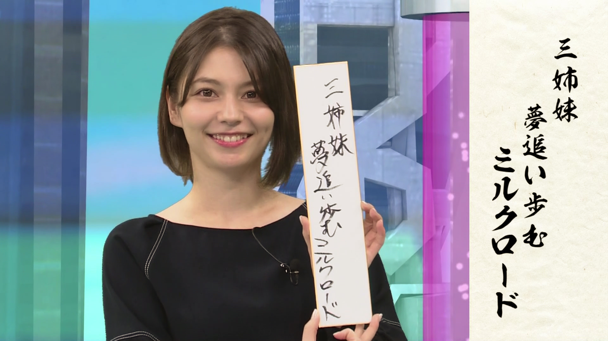

Standing on my rooftopKulumi Nakata doing a color test screenLynn green screent test and calibrationRena Nounen against greenscreen used for color calibrationMy sister against new york city background, this is a simple long exposure trick that has stunning results.